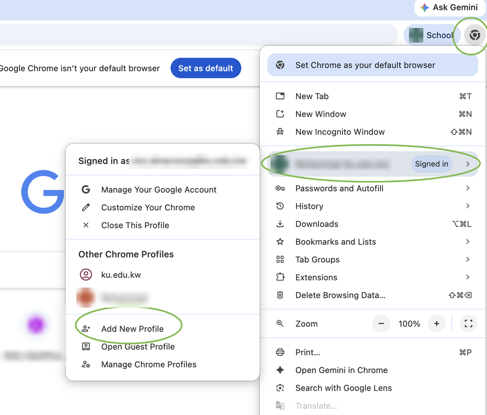

1. Getting in
Where do I go?
Open ai.ku.edu.kw. Always enter through this address.
Which account do I sign in with?
Your KU account - the same one you use for University email. Not a personal Gmail account.
2. The most common problem: "Access denied"
Why do I see "Access denied" or the wrong account?
Your browser is signed in to more than one Google account (for example a personal Gmail and your KU account), and it picks the wrong one.
Fix: create a separate browser profile used only for your KU account, and open ai.ku.edu.kw from that profile.

Google Chrome - 3 steps
- Click your profile icon at the top right of Chrome.
- Choose "Add New Profile" (or "Add Chrome profile"), then sign in with your KU account.
- In that new window, open ai.ku.edu.kw.
Official guide: Google Chrome Help - Manage Chrome with multiple profiles
Safari (Mac) - 3 steps
- Choose Safari > Settings, then click Profiles.
- Create a new profile (for example "KU").
- Open a window in that profile, sign in with your KU account, and open ai.ku.edu.kw.
Official guide: Apple Support - Create distinct browsing profiles in Safari on Mac
Microsoft Edge - 3 steps
- Select your profile picture at the top of Edge.
- Choose "Add profile" / "Set up new profile", and name it "KU".
- In that profile window, open ai.ku.edu.kw and sign in with your KU account.
Official guide: Microsoft Support - Sign in and create multiple profiles in Microsoft Edge
3. Which tool for what?
Chat
Drafting, editing, summarising and translation.
Deep Research
Multi-step research on the web that produces a report with citations. Open and check the cited sources.
NotebookLM
Answers grounded in, and cited to, the sources you add (papers, notes, slides). Good when you have many sources. Still verify what it says.
Source: Google Cloud - Gemini Notebook Enterprise (NotebookLM) overview
Agents
Pre-configured assistants for a specific task. Pick one from the agent list in the portal.
Source: Google Cloud - Agents overview
4. Notice for students
What should I know before I use it?
- Check what it tells you. It can be wrong, and it can invent facts and references.
- Your work stays within the University's environment and is not used to train public AI models. Still, keep passwords and personal, medical or financial details out.
- Keep your own copy of your files. It is an assistant, not storage.
- Academic integrity rules apply. Do not submit its output as your own work unless your instructor allows it.
- Tell your instructor if something goes wrong.
- Using it is your choice.
See the KU Generative AI Policy (PDF).
5. Notice for faculty
What should I know before I use it?
- Check what it produces before you rely on it.
- Your data stays yours. It stays within KU's environment and is not used to train public models.
- Keep your own copy of any files you connect.
- Share the student notice (above) with your students before using it in class.
- Report problems via bit.ly/ku-ge-rs.
- Participation is voluntary.
Where can I find the faculty workshop slides?
Slides from the faculty introduction workshop held on 23 September 2026:
6. Dos and don'ts
Quick list
Do
- Use your own browser profile for your KU account, and enter via ai.ku.edu.kw.
- Use connectors and @mentions to reach your files, instead of downloading and re-uploading them (about connectors).
- Use NotebookLM when you work with many sources.
- Check citations, figures and calculations.
Don't
- Upload restricted data: student records, exam papers, personal data.
- Use it to decide grades, promotions or evaluations.
- Paste large confidential datasets into chat.
7. Getting help
Where do I get help or report a problem?
Use the request form: bit.ly/ku-ge-rs.
8. Policy
Which policy applies?
The Kuwait University Generative AI Policy: English (PDF) - Arabic (PDF).